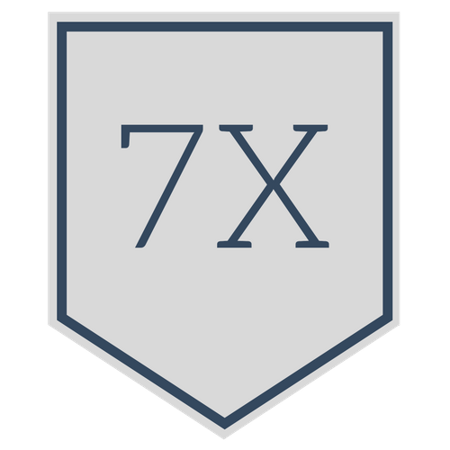

Progress
Your progress is determined by the number of problems you have completed successfully over the total number of problems in the course.
Badges
 |
 | |
| Won 5 times | Won 2 times | Won 0 times |
Did you know that socialization among students enhances motivation and completion rates?
One way to interact with your fellow students is by posting to the course's forum page.